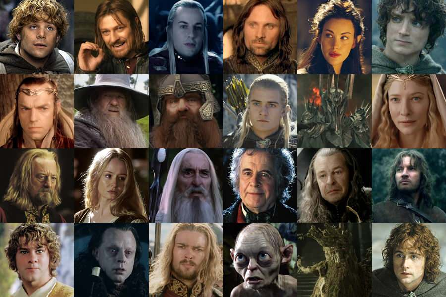

I’ve always had a deep love for The Lord of the Rings. There’s something about its world, its characters,
and the journey it takes you on that speaks to me in a way few stories ever have. This page is my way of
sharing that passion with you. I want you to see beyond the battles and adventures—to notice the rich
details, the layers of meaning, and the artistry that make this story so special. My hope is that by the
time you’re done here, you’ll not only understand why I hold The Lord of the Rings so close to my heart,
but you might also fall in love with it yourself.
The Artistic Mastry of the Lord of the Rings
Few stories have left as deep and lasting an impression on my imagination as The Lord of the Rings. Created
by J.R.R. Tolkien and brought to life on the big screen by Peter Jackson, this legendary tale spans three
novels and three films that together weave an unforgettable saga of courage, friendship, sacrifice, and
hope. I have been passionate about The Lord of the Rings for years—not just because of its epic battles
or sweeping landscapes, but because of the artistry behind every word on the page and every frame on the
screen. It is a rare example of a work that excels equally as literature and as cinema.
One of the most striking elements of The Lord of the Rings is its intricate and deliberate plot structure.
Tolkien builds his world with such detail that every event feels inevitable yet surprising, as though
history itself is unfolding. The story follows multiple interconnected threads, from Frodo and Sam’s
perilous journey to Mordor to Aragorn’s rise as the true king of Gondor, all while the shadow of Sauron
looms over Middle-earth. The pacing is masterful—moments of quiet reflection are balanced against scenes
of desperate action, giving the audience time to connect with the stakes before the next wave of tension
arrives. Each subplot reinforces the central narrative, making the conclusion not just satisfying, but
profoundly earned.
Characters
The characters themselves are the beating heart of this saga. From Frodo’s gradual weariness under the
Ring’s burden to Sam’s unwavering loyalty, from Aragorn’s reluctant acceptance of his destiny to Gandalf’s
transformation from the Grey to the White, every figure experiences growth and change. Even secondary
characters such as Éowyn, Faramir, and Boromir are written and portrayed with depth and complexity. In
both the books and the films, the characters’ personal arcs mirror the overarching theme of resisting
corruption and choosing what is right over what is easy. This level of development makes every victory
more triumphant and every loss more devastating.

Emotion runs like a current through The Lord of the Rings, carrying the audience through moments of joy,
grief, terror, and hope. Tolkien’s writing captures not only the grandeur of a world on the brink of
destruction but also the intimate bonds between friends and allies. In the films, these emotional beats
are amplified by breathtaking performances, from the quiet pain in Frodo’s eyes to the rousing speeches
of Aragorn and Théoden. This emotional richness ensures that The Lord of the Rings is more than just an
epic fantasy—it’s a deeply human story.
Music
The music of The Lord of the Rings, composed by Howard Shore, is itself a masterpiece. Each theme tells
its own story, from the humble warmth of the Shire motif to the haunting tones of Mordor and the soaring
majesty of Gondor’s theme. Shore’s score weaves in and out of the narrative, subtly guiding the audience’s
emotions and foreshadowing events before they happen. In many ways, the music is as much a storyteller as
Tolkien’s words or Jackson’s direction.
Themes and Messages
At its core, The Lord of the Rings delivers a timeless and universal message: that even the smallest person
can change the course of the future. It is a story about resisting evil, valuing friendship, and holding
onto hope in the darkest of times. The moral weight of the narrative resonates across generations,
reminding us that courage is not the absence of fear, but the decision to face it.
When taken together—the meticulous plot, the richly drawn characters, the emotional depth, the evocative
music, and the powerful themes—The Lord of the Rings emerges as a true masterpiece of literature and
filmmaking. It stands as a rare example of a story that not only entertains but also inspires, moving its
audience to reflect on their own values and choices. For me, it is more than a favorite series; it is a
work of art that continues to shape the way I see the world.